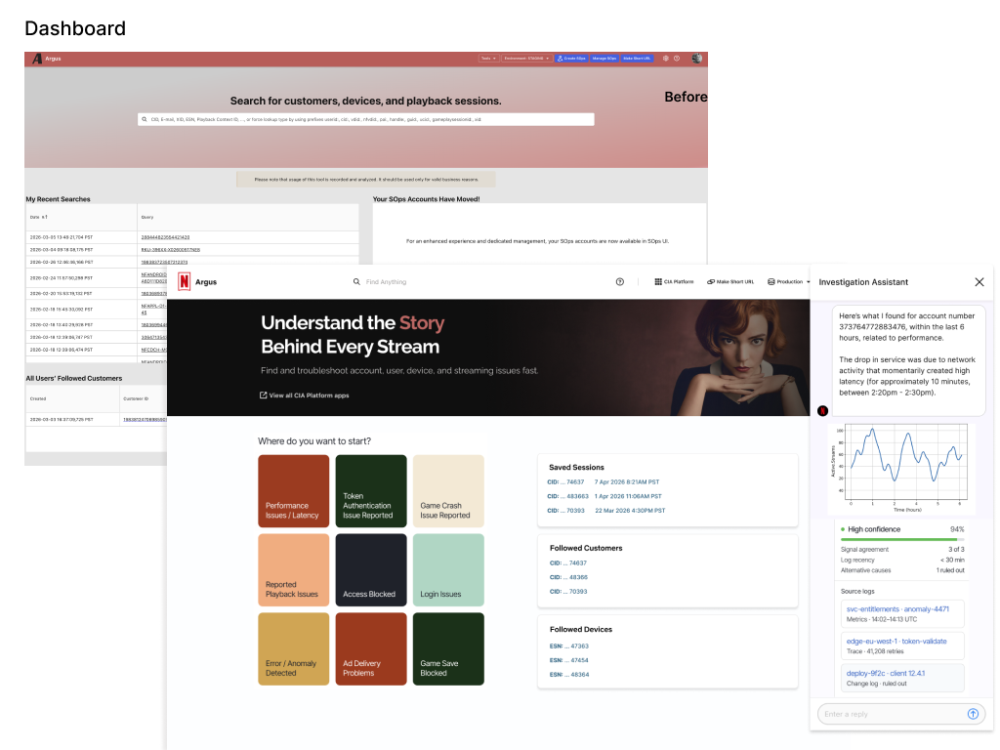
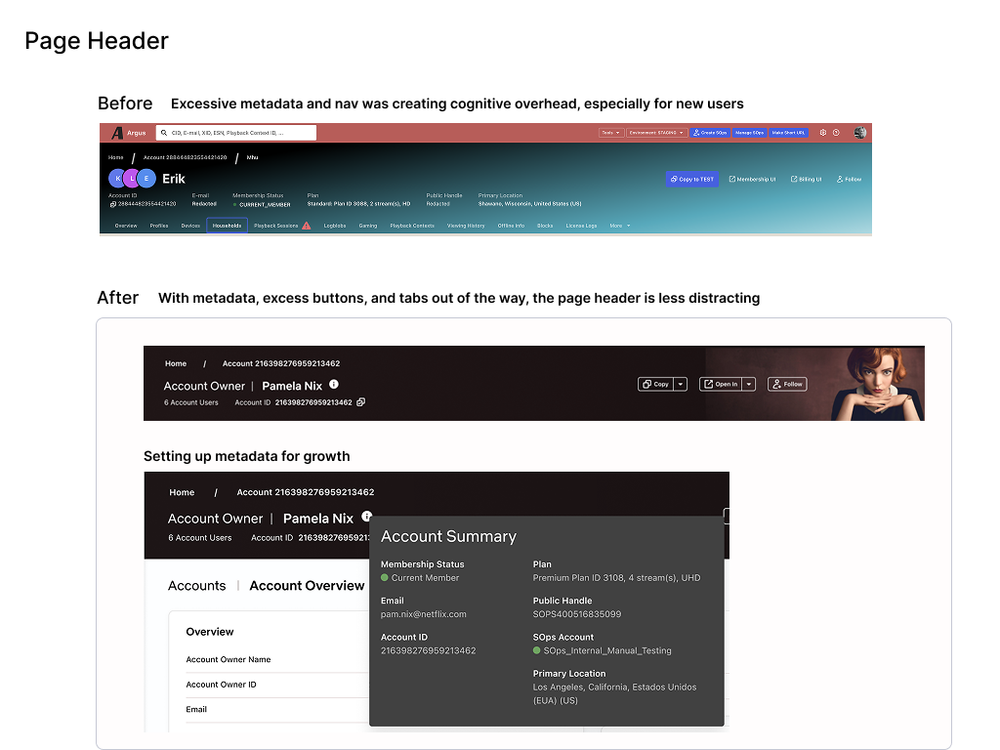
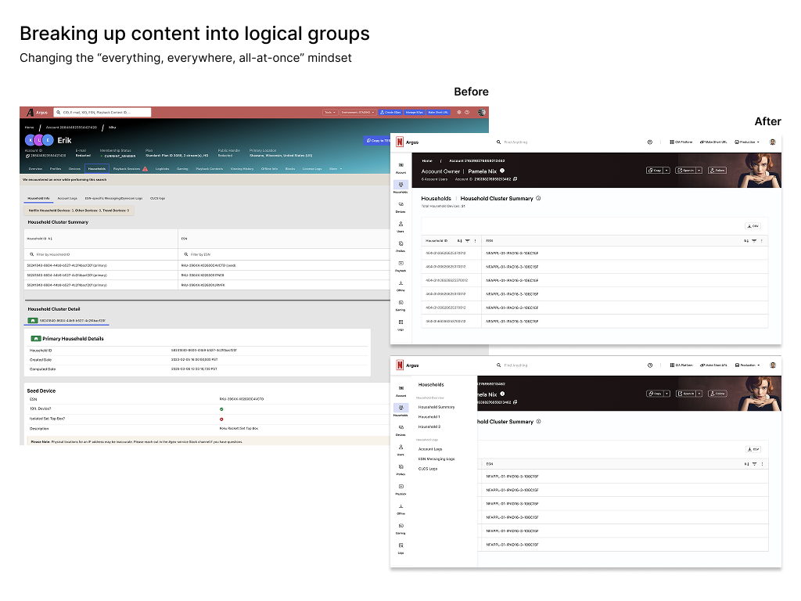

{{ journeyDesc }}
{{ journeySources }}
Built from a 9-minute customer conversation between Marco Castillo (Whirl) and Manu Narayan (CIO, GitLab). Where the transcript is silent, gaps are filled with inferred steps, pain points and opportunities, labelled as such for validation.
Under a year at GitLab; inherited an existing Whirl partnership. Carries a dual mandate: drive AI transformation across the business while transforming his own teams at the same time.
Draft ranking by strength of evidence and reach across the journey.